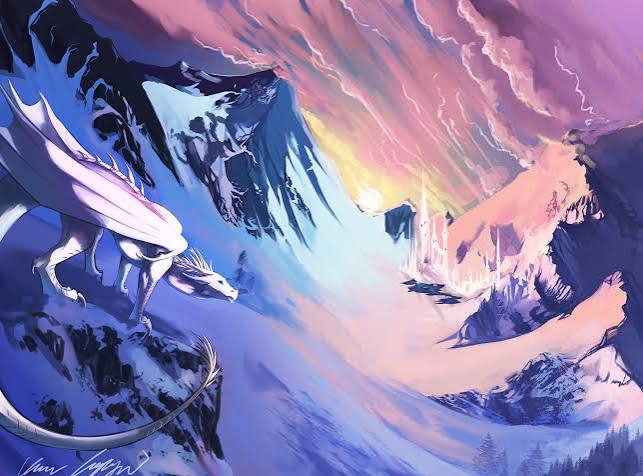

Dragon Of The Week
Abyss is a SeaWing IceWing hybrid a hundred years after the SandWing War. She is part of a small colony of hybrids who live in the arctic water near the IceWing Kingdom. She’s 5 and studying at Jade Mountain.
Create an OC